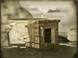
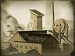

Requires
- Buildings: 
Enables
- Buildings: 
Basic Building Statistics (can be modified by difficulty level, arts, skills, traits and retainers)
- Cost: 4250
- +40 tonnes of coal
- +2 per turn to town growth from trade within this province
- +400 to wealth generated by mines in this province
- -10% to the cost of all ships in this province
- -1 to happiness from modernisation
Clan Effects
- +2 to modernisation (clan development)
Description
Skies are darkened as tomorrow takes root.
The province has coal deposits which can be exploited in place of charcoal for industry. With proper investment, coal can be produced on a large scale. It is the only practical power source for the modern, industrial world and, in particular, steam trains. Easy access to "King Coal" was what began the Industrial Revolution in England at the appropriately named Coalbrookdale. By 1853, coal was the root of industrial wealth in the West. With coal to burn, steam-powered machinery was practical and profitable, and iron could be smelted in great quantities. To get the same industrial results with charcoal would have stripped forests bare across the world!